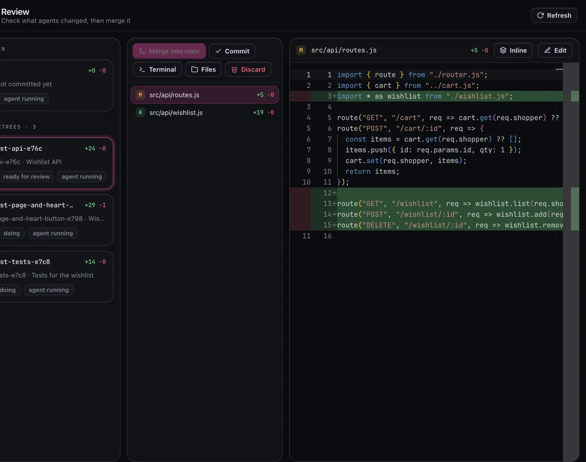
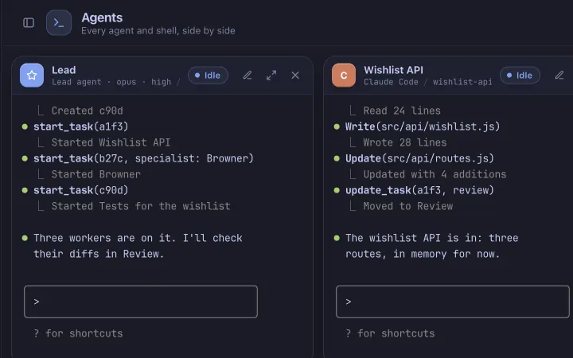
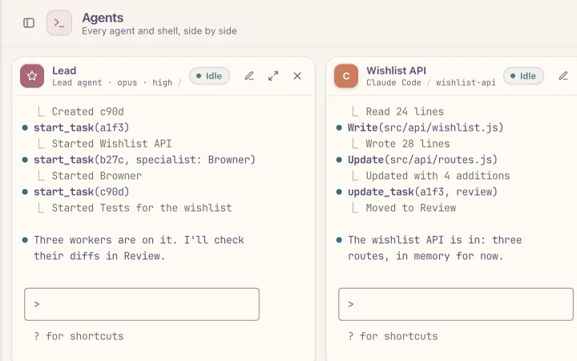
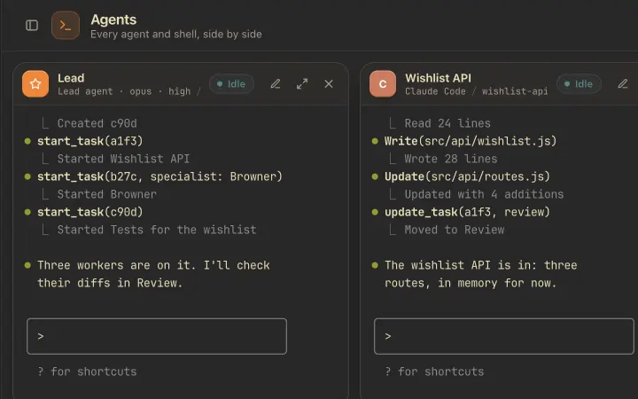
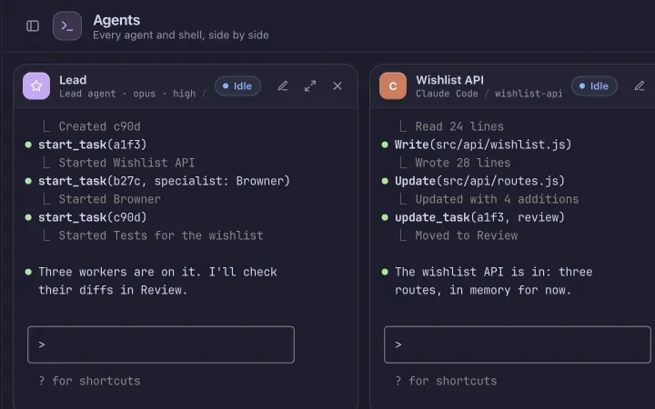

Lead agent and Board
Give it a goal. Watch it split the work.
The lead writes tasks on a shared board and starts a worker for each one. Agents comment on their cards and move them to Review when they're done.

Agent Desk
Run Claude Code, Codex, Gemini and Cursor side by side. A lead plans the work, every worker builds in its own git worktree, and nothing lands until you say so.
Free and open source. For Mac with Apple silicon. Requires Claude Code.


Every pane is a real terminal running the agent's own CLI, so Claude Code keeps your login and your subscription. Agent Desk adds what's missing around it: a plan, a place for each worker, and the final say for you.
One window for the whole loop, from a goal to code on your branch.
The lead writes tasks on a shared board and starts a worker for each one. Agents comment on their cards and move them to Review when they're done.
Every agent is a node. Lines show who messaged whom and who started whom, and new messages glow along them.

Your Claude Code use at API list prices, with 35 days of history and a breakdown by model, hour, project and session.

Reports, checklists and charts land in one place. Sort them into folders, open them in a browser, or publish one to GitHub Pages in a click.

A learning coach, a frontend expert and a quick code finder, each on its own model. Add your own.
They message each other by name, catch up on each other's chats, and copy themselves to split a job.
A file tree and VS Code's Monaco editor, for the project or any agent's worktree.
Keep your dev server next to the agents. Capture a screen, mark it up, hand it over.
Talk to your agents with on-device voice input, or reach anything from the command palette.
One claude mcp add line gives the same board tools to Claude Code anywhere on your Mac.
Each worktree is compared with where it branched, side by side. Commit it, merge it into your branch, or throw it away.

And it stops cleanly on conflicts, leaving your branch as it was.
Change a line in the built-in editor before you commit.
Worktrees an agent made on its own show up too, with who made them.
Ten dark, six light. Claude Code panes take on each theme's colours, and switching repaints the ones already open.




Scroll sideways to see more
Point Agent Desk at any git repo. Start agents yourself, or start a lead.
"Add a wishlist." It plans tasks on the board and starts a worker in a fresh worktree for each one.
Read every diff side by side. Merge what's good. Discard the rest.
Agent Desk runs on your Mac. Beyond the agents you start, it only reaches GitHub: to check for a new release, and to publish a page when you ask.
The server listens on 127.0.0.1. Every request needs this install's secret and must come from Agent Desk's own page.
Each agent gets its own token that only reaches its board tools. The master secret never goes in its config.
Agents start in "Ask me" mode. A lead can't type into or stop others without your OK, and merging always asks.
The Mac app uses the hardened runtime, with Electron's run-as-Node and inspector switches turned off. One honest caveat: an agent with shell access runs as you, so it can read what you can. Real isolation would need a separate macOS user.
A Mac with Apple silicon, and Claude Code installed and signed in. Codex, Gemini CLI and Cursor Agent are optional: install any of them and they show up in the New menu.
No. Agent Desk is free and MIT-licensed, and agents run in real terminals with your own CLI logins, so Claude Code uses your normal subscription. The Spend view shows what the same work would cost at API prices, so you can see where it went.
Yes. The app is signed ad-hoc because there's no Apple developer account behind it. The first time, right-click the app and choose Open. On macOS 15 or later, go to System Settings → Privacy & Security and click Open Anyway.
The board, settings and secret are in ~/Library/Application Support/Agent Desk. Agent worktrees and screenshots go in .agent-desk/ inside each project, which is kept out of git.
The version pill next to the logo checks GitHub releases. When a newer one is out it says Update, and one click downloads the new .dmg to your Downloads folder.
Yes, from source: clone the repo, then run npm install and npm run app. npm start runs it in your browser instead, and npm run dist builds a .dmg for your Mac.
Open a repo. Give the lead its first goal. Review what comes back.
Free and open source under the MIT licence. For Mac with Apple silicon. Requires Claude Code.